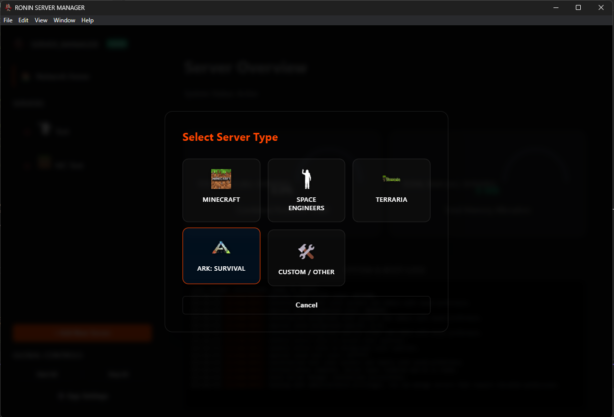

material-paw: Ark: Survival
RCON & PowerShell Integration
Ark: Survival Evolved (and Ascended) runs as a persistent Windows process. Because it does not stream its console output to a standard window, RSM utilizes a PowerShell Bridge to tail the latest log files and uses the RCON Protocol to send administrative commands like kicks, bans, and broadcasts.
⚠️ Pre-Configuration Steps
Ark requires specific launch flags to be active before RSM can communicate with it via RCON.
- RCON Activation: You must ensure
-RCONEnabledis in your startup arguments when entering the server into the RSM (Shown Below*). Without this, the Console tab in RSM will be "Read-Only." - Firewall Rules: Ensure your RCON Port (Default:
27020) is open in your Windows Firewall. RSM connects to this port locally to execute commands. - Log Generation: By default, Ark might not save logs to the disk. Ensure
-servergamelogis added to your arguments so RSM has a file to "tail". You will also have to run the server at least once outside of the RSM to ensure it creates the save folder where the logs are stored - File Location: Locate these paths before starting the RSM Wizard:
- Server EXE: Usually located at
...\ShooterGame\Binaries\Win64\ShooterGameServer.exe - Working Directory: The
Win64folder containing the executable. - Log Folder: Usually located at
...\ShooterGame\Saved\Logs. (will see this folder after running the server once by itself) - RCON Port: Default is
27020, set by using-RCONPort=27020in the custom arguments field. - Admin Password: The password set via
-ServerAdminPassword.
- Server EXE: Usually located at
📂 Required Pathing
While setting your servers settings (before adding to RSM) and doing your initial run of the server, be sure to remember or copy where these folder and files are so you have them ready when adding the server to RSM.
The most common locations are shown below, but they may differ based on your installation method (Steam, Epic, etc.) and custom configurations.
-
Executable Path
Points to the binary.
...\Win64\ShooterGameServer.exe -
Working Directory
Critical. Must be the
Win64folder so the server can find its sibling.dllfiles. -
Log Path (Folder)
Points to the
Logsfolder. RSM will automatically scan this folder and "tail" the most recently created.logfile. -
RCON Port
Required for Commands. Match this to your
-RCONPort=argument. This allows the RSM console to send commands. -
Admin Password
Required for Commands. This must match your
-ServerAdminPassword=that you put into the custom arguments. RSM uses this to authenticate RCON sessions.
{kind=link}
{kind=link}
{kind=link}
{kind=link}
{kind=link}
More Custom Arguments
⚙️ Startup Arguments
When using the Ark preset in RSM, your Arguments field should look similar to this to ensure compatibility:
| Flag | Function |
|---|---|
TheIsland?listen |
Sets the map and starts the listener. |
-servergamelog |
Required. Forces Ark to write console output to the log files RSM reads. |
-RCONEnabled |
Required. Opens the RCON communication channel. |
-RCONPort=27020 |
Defines the port RSM uses to send commands. |
-ServerAdminPassword=... |
Sets the credentials for RSM to log in. |
🚀 Adding to RSM
- Open Manager: Click Add Server and select the Ark: Survival card.

{kind=link}
- Fill Fields: Paste your
ShooterGameServer.exepath. RSM will attempt to auto-fill the Working Directory for you. - Verify RCON: Double-check that your
RCON Portin RSM matches the one in your arguments string. - Save & Start: Once saved, hit Start.
- Note: Ark servers often take 30-60 seconds to create the first log file. If the console is blank initially, just wait for the server to finish "Primal Game Data" loading.
🔍 Troubleshooting
- Console is empty: Ensure
-servergamelogis in your arguments. Check that theLog Pathin RSM points to a folder containing.logfiles. - Commands don't work: Verify the
Admin Passwordmatches your-ServerAdminPassword. Ensure the RCON port isn't being blocked by an Antivirus or Firewall. - Server crashes on Start: Ensure the
Working Directoryis set to theWin64folder, not the baseArkfolder. The executable needs to be "inside" its library environment to run.
Note: Ark logs are "buffered" by the game engine. There may be a 2-5 second delay between an in-game action and it appearing in the RSM console.